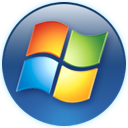

Windows Vista
Microsoft · 2007
Windows Vista (2007) was Microsoft's big leap after five years of XP. It brought the translucent Aero glass look, a black glass taskbar with a round Start orb, and search built right into the Start menu.
On the right of the screen sat the Sidebar, a column of little gadgets: a clock, a calendar, a CPU meter, notes. Vista asked a lot of the PCs of its day, and its reputation never quite recovered — but most of what people loved about Windows 7 began here.
What made it special
- Aero glass: translucent, glowing window frames.
- The Sidebar with its desktop gadgets.
- The round Start orb and Start Search.
- Flip 3D, live taskbar thumbnails and the Aurora wallpaper.
In RetroMac
- The Sidebar on the right edge: clock, calendar and a CPU and memory meter with your Mac's real numbers. The + at the top shows or hides each gadget.
- Eight Vista wallpapers, from Aurora to the Ultimate orb.
- Icons from Luximoz's Windows Vista icon pack.
ⓘ Did you know…
Longhorn. Vista spent years in development under the codename Longhorn, and much of what was planned was cut or reset along the way.
“Cancel or allow?” User Account Control asked so often that Apple made a “Get a Mac” ad about it.
Moving wallpaper. Vista Ultimate's DreamScene could play a video as the desktop background.